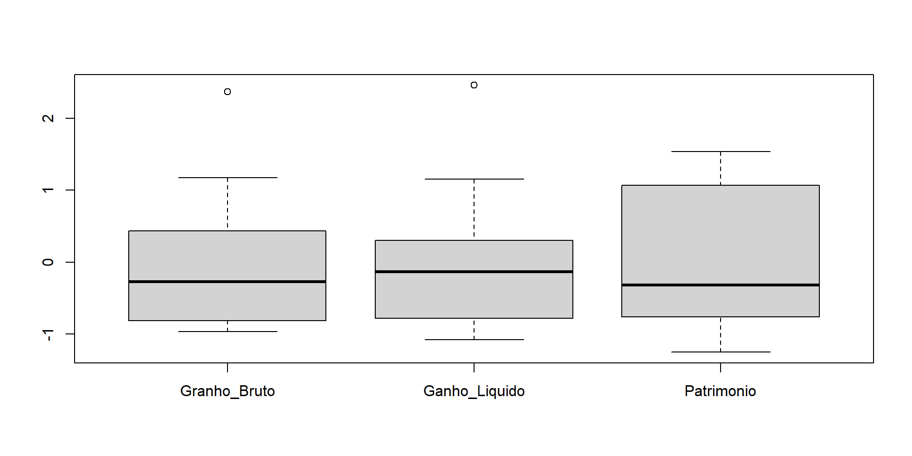
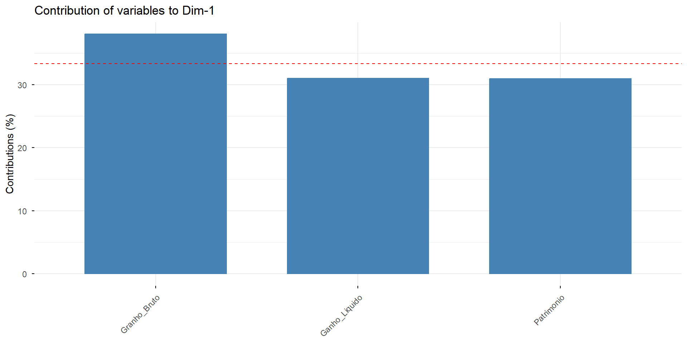
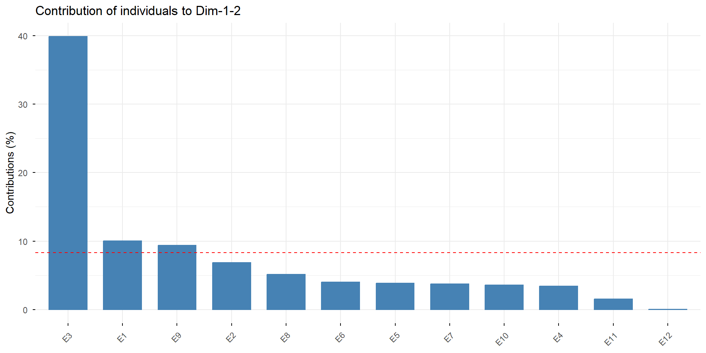

Um problema central na análise de dados multivariados é a redução da dimensionalidade: é possível descrever com precisão a informação contida nos dados mensurados em \(p\) variáveis utilizando um conjunto \(r < p\) de novas variáveis, perdendo a menor quantidade de informação possível?
A análise de componentes principais tem este objetivo: dadas \(n\) observações de \(p\) variáveis, se analisa se é possível representar adequadamente esta informação com um número menor de variáveis construídas como combinações lineares das variáveis originais.
O Problema…
Dado um conjunto de variáveis \(\mathbf{x} = [X_1 \hspace{0.1cm} X_2 \hspace{0.1cm} \cdots \hspace{0.1cm} X_p]^t\), podemos encontrar outro conjunto de variáveis \(\mathbf{y} = [Y_1 \hspace{0.1cm} Y_2 \hspace{0.1cm} \cdots \hspace{0.1cm} Y_r]^t\), dadas por
\[Y_i= \displaystyle{\sum_{j=1}^p a_{ij}X_j}, \,\, i = 1, \cdots, r < p\]
de tal forma que a informação contida em \(\mathbf{x}\) esteja sendo bem representada por \(\mathbf{y}\)?
Algumas questões
Vamos encontrar combinações lineares para representar informação.
🤔 O que é informação?
Informação \(\Longrightarrow\) Variância: quanto maior a variabilidade, maior a informação contida nos dados, maior a variância dos dados
Algumas questões
Outra questão importante:
🤔 O que é uma boa representação da informação?
Boa representação da informação \(\Longrightarrow\) tomar as componentes de \(\mathbf{y}\) que assegurem uma variância similar à de \(\mathbf{x}\)
Esquematicamente
Nestas condições, temos que buscar combinações lineares\(\mathbf{y}\) das variáveis \(\mathbf{x}\) de forma que se maximize a variância
Variáveis Originais
Combinações Lineares
\(X_1\)
\(Y_1\)
\(X_2\)
\(Y_2\)
\(\vdots\)
\(\vdots\)
\(X_{r}\)
\(\Longrightarrow\)
\(Y_r\)
\(\vdots\)
\(\vdots\)
\(X_p\)
\(Y_{p}\)
\(\rm{Var}[\mathbf{y}]\): Máxima
Esquematicamente
Ideia básica da técnica de Análise de Componentes Principais:
Variáveis Originais
Componentes Principais
\(X_1\)
ACP
\(Y_1\)
\(X_2\)
\(\Longrightarrow\)
\(Y_2\)
\(\vdots\)
\(\vdots\)
\(X_{p}\)
\(Y_r\)
\(\vdots\)
\(Y_{p}\)
\(r\) primeiras componentes resumam, por exemplo, 80% do comportamento geral das \(p\) variáveis originais
Principais objetivos
Redução da dimensionalidade dos dados, projetando-os em uma dimensão \(r < p\);
Principais objetivos
Obtenção de combinações interpretáveis: determinar índices e produzir escores com base nos resultados avaliados para as \(p\) variáveis;
Principais objetivos
Descrição e entendimento da estrutura de correlação entre as variáveis, através de algumas combinações lineares das mesmas.
Componentes Principais: o que são?
Algebricamente: são combinações lineares das \(p\) variáveis originais, \(X_1, X_2, \cdots, X_p\).
Geometricamente: são as coordenadas dos pontos amostrais em um sistema de eixos obtido pela rotação do sistema de eixos original, na direção de variabilidade máxima.
Não pressupõe normalidade dos dados, embora componentes derivadas de populações normais tenham interpretações úteis.
Com frequência, revela relações insuspeitas. Pode permitir interpretações que não seriam obtidas preliminarmente.
Em algumas aplicações, os componentes da ACP configuram o objetivo final do estudo. Em outras, servem como passo intermediário para realização de outras análises, como regressão, classificação, agrupamento, etc…
Para evitar que duas variáveis \(Y_i\) e \(Y_k\), \(i \neq k\), \(i,k = 1, \cdots, p\), compartilhem informação, adicionamos uma segunda restrição aos vetores \(\mathbf{a}_i\):
Considere o vetor aleatório p-variado \(\mathbf{x} = [X_1 \hspace{0.3cm} X_2 \hspace{0.3cm} \cdots \hspace{0.3cm} X_p]^t\) com vetor de médias \(\boldsymbol{\mu}\) e matriz de covariâncias \(\boldsymbol{\Sigma}\), positiva definida (todos os seus autovalores são positivos), sendo
Assim, no contexto de componentes principais, seja \(\mathbf{x} = [X_1 \hspace{0.3cm} X_2 \hspace{0.3cm} \cdots \hspace{0.3cm} X_p]^t\) um vetor aleatório. Seja \(\boldsymbol{\Sigma}\) a matriz de variâncias e covariâncias e \((\lambda_1, \boldsymbol{e}_1)\), \((\lambda_2, \boldsymbol{e}_2)\), …, \((\lambda_p, \boldsymbol{e}_p)\) seus autovalores e autovetores, tal que \(\lambda_1 \geqslant \lambda_2 \geqslant \cdots \geqslant \lambda_p > 0\). Então:
Uma escolha interessante para os vetores de constantes \({\boldsymbol{a}_i}\), \(i = 1, \cdots, p\) são os autovetores normalizados\({\boldsymbol{e}_i}\) da matriz \(\boldsymbol{\Sigma}\).
Dessa forma, podemos definir a \(i\)-ésima componente principal da matriz \(\boldsymbol{\Sigma}\), \(i = 1, \cdots, p\) como sendo
e \(\boldsymbol{y}\) o vetor das componentes principais. Então, \(\boldsymbol{y} = \boldsymbol{O}^t \mathbf{x}\) e a matriz de covariâncias de \(\boldsymbol{y}\) será:
ou ainda, \(\boldsymbol{\Sigma} = \boldsymbol{O} \boldsymbol{\Lambda} \boldsymbol{O}^t = \displaystyle \sum_{i=1}^p \lambda_i \boldsymbol{e}_i \boldsymbol{e}_i^t\), uma vez que \(\boldsymbol{O}\) é uma matriz ortogonal tal que \(\boldsymbol{O} \boldsymbol{O}^t = \boldsymbol{O}^t \boldsymbol{O} = \boldsymbol{I}\). Estes resultados são conhecidos como Teorema da decomposição espectral.
Pode-se então concluir que a j-ésima componente explica
\[\displaystyle{\frac{\textrm{Var}[Y_j]}{\textrm{Variância Total de X}}} = \displaystyle{\frac{\lambda_j}{\textrm{tr}(\boldsymbol{\Sigma})}} =
\displaystyle{\frac{\lambda_j}{\displaystyle{\sum_{i=1}^p \lambda_i}}}\]
da variação total original, e ainda, que as \(r\) primeiras componentes explicam
\[\displaystyle{\frac{ \displaystyle \sum_{j=1}^r \textrm{Var}[Y_j]}{\textrm{Variância Total de X}}} = \displaystyle{\frac{\displaystyle \sum_{j=1}^r \lambda_j}{\textrm{tr}(\boldsymbol{\Sigma})}} =
\displaystyle{\frac{\displaystyle \sum_{j=1}^r \lambda_j}{\displaystyle{\sum_{i=1}^p \lambda_i}}}\]
da variação total.
Variabilidade explicada
Busca-se analisar um conjunto menor de variáveis sem perder muita informação sobre a estrutura de variabilidade original
Aproximação de \(\boldsymbol{\Sigma}\): Analisando as \(r\) primeiras componentes principais
As correlações medem unicamente a importância de uma variável individual sem considerar a influência das demais. Não medem a importância de \(X_i\) na presença de outras variáveis.
Os coeficientes (cargas) dos componentes (\(e_{ij}\)), seus sinais e magnitudes, permitem interpretar os componentes e avaliar a importância das variáveis em sua constituição.
Estimação das Componentes Principais
Em geral, \(\boldsymbol{\Sigma}\) é estimada por \(\boldsymbol{S}\)
Covariância entre as componentes: \(\text{Cov}(\hat{Y}_j, \hat{Y}_k) = 0, \,\,\, j \neq k\)
Variância total estimada explicada pela componente: \[\dfrac{\text{Var}(\hat{Y}_j)}{\text{Variância total estimada de } \mathbf{x}} = \dfrac{\hat{\lambda}_j}{\text{tr}(\boldsymbol{S})} = \dfrac{\hat{\lambda}_j}{\sum \limits_{i=1}^p \hat{\lambda}_i}\]
Estimação das Componentes Principais
Correlação estimada entre componente e variável: \[r_{\hat{Y}_j,\hat{X}_k} = \displaystyle{\frac{\hat{e}_{jk} \sqrt{\hat{\lambda}_j}}{\sqrt{\sigma_{kk}}}}\]
dados <-read.table("https://raw.githubusercontent.com/tiagomartin/est014/refs/heads/master/dados/empresas.txt", row.names =1, header =TRUE) dados %>%str()
## Analise de Componentes Principais utilizando a matriz de covariancias (Nao aconselhavel, neste caso)acp_S =prcomp(dados)## Proporcao da variacao explicadasummary(acp_S)
Importance of components:
PC1 PC2 PC3
Standard deviation 6440.0615 1.594e+03 145.23266
Proportion of Variance 0.9418 5.767e-02 0.00048
Cumulative Proportion 0.9418 9.995e-01 1.00000
Proporção da variância populacional padronizada devido à \(j\)-ésima componente
\[\dfrac{\text{Var}({Y}_j)}{\text{Variância total de } \boldsymbol{z}} = \dfrac{{\lambda}_j}{\text{tr} (\boldsymbol{P})} = \dfrac{{\lambda}_j}{p}\]
Correlação entre componente \(Y_j\) e a variável padronizada \(Z_k\):
\[\rho_{Y_j,Z_k} = e_{jk} \sqrt{\lambda_j}\]
Observações
As componentes principais não são invariantes à mudanças de escala. Os resultados são diferentes quando se faz a análise utilizando a matriz de covariâncias e a matriz de correlações.
As componentes obtidas a partir da matriz de covariâncias são influenciadas pelas variáveis de maior variância. A matriz de correlações, em geral, é a melhor opção quando as variâncias são muito heterogêneas.
Um valor pequeno incomum para o último autovalor da matriz de covariâncias (ou correlação) amostral pode indicar uma dependência linear não detectada no conjunto de dados.
Valores grandes de autovalores (e correspondentes autovetores) são importantes em uma análise.
Quantas componentes devem ser retidas?
Critério de Kaiser: Trata-se de uma regra prática (heurística) para decidir quantas componentes principais manter em uma PCA extraída através da matriz de correlações. Ele diz:
Retenha apenas as componentes associadas a um autovalor maior que 1.
\(\lambda = 1\) → a componente explica tanta variabilidade quanto 1 variável original
\(\lambda > 1\) → explica mais variabilidade do que qualquer variável isolada
\(\lambda < 1\) → explica menos variabilidade do que uma única variável → então não “vale a pena”
Quantas componentes devem ser retidas?
Média dos autovalores: É um critério alternativo quando a PCA é feita sobre matriz de covariâncias.
Se PCA foi feita na matriz de covariâncias, retenha PCs com autovalores maiores que a média dos autovalores.
Regra: retenha apenas os componentes cuja linha azul está acima da linha vermelha.
Parallel Analysis (Horn) está dizendo: retenha 1 componente principal.
Interpretação das componentes principais
Em geral, quando existe uma alta correlação positiva entre todas as variáveis, os sinais associados às variáveis coincidem na primeira componente principal.
Neste caso, a primeira componente principal pode ser interpretada como um índice global, calculado como uma média ponderada de todas as variáveis.
O restante das componentes, normalmente possuem pesos negativos e positivos e são interpretadas como um contraste entre grupos de variáveis.
dados %>%scale(center=TRUE, scale=TRUE) %>%boxplot()

Voltando ao Exemplo
## Analise de Componentes Principais utilizando a matriz de correlacoes (Mais aconselhavel, neste caso)acp_R =prcomp(dados, scale. =TRUE)## Proporcao da variacao explicadasummary(acp_R)
Importance of components:
PC1 PC2 PC3
Standard deviation 1.5788 0.6508 0.28978
Proportion of Variance 0.8308 0.1412 0.02799
Cumulative Proportion 0.8308 0.9720 1.00000
\[Y_1 = 0,617 \times Z_{GB} + 0,557 \times Z_{GL} + 0,556 \times Z_{PA} \Longrightarrow
83,08\% \text{ da informação total de } \boldsymbol{z}\]
Interpretação: É basicamente um índice de desempenho global da empresa. O coeficiente de maior grandeza numérica desta componente é relativo a ganho bruto enquanto que os demais coeficientes são aproximadamente iguais. Quanto maior os valores de ganhos brutos e líquido e patrimônio da empresa, maior será o valor numérico da componente. Além disso, todas as três variáveis possui alta correlação com essa componente, indicando serem importantes na composição da mesma.
Voltando ao Exemplo
\[Y_2 = -0,001 \times Z_{GB} - 0,706 \times Z_{GL} + 0,708 \times Z_{PA} \Longrightarrow
14,12\% \text{ da informação total de } \boldsymbol{z}\]
Interpretação: É uma comparação entre as variáveis ganho líquido e patrimônio, sendo que essas duas variáveis possuem igual importância na composição da mesma. Valores próximos de zero dessa componente indicam empresas com um certo equilíbrio entre ganho líquido e patrimônio acumulado no período.
As setas indicam em que direção a variável aumenta. os indivíduos que estão posicionados no sentido da seta são os que têm valores maiores naquela variável.
Ângulo entre a seta (variável) e o eixo PC1: O cosseno do ângulo entre a variável e a PC é exatamente o loading.
Observação: Quando a PCA é feita na matriz de correlações, os loadings são exatamente as correlações entre as variáveis originais e as componentes principais. Quando usamos matriz de covariâncias, os loadings refletem contribuição em variância e o cosseno do ângulo não corresponde numericamente à correlação.
Voltando ao Exemplo
PC1 (Dim1 = 83.1%): Praticamente toda a informação relevante está aqui.
PC1 representa um eixo geral de nível financeiro / escala econômica. Quanto maior Patrimônio / Ganho Bruto / Ganho Líquido → mais à direita o indivíduo aparece.
Todas variáveis apontam para a direita, e com ângulos semelhantes → altíssima correlação entre elas
Voltando ao Exemplo
Quem está mais pra direita (E1, E2, E3) → são aqueles com valores altos nessas variáveis
Quem está mais pra esquerda (E8, E9, E10…) → são os com valores baixos
A empresa E12 posiciona-se muito próxima à origem do plano principal, indicando um perfil mediano em todas as variáveis financeiras consideradas.
Ela não apresenta características extremas nem para valores altos, nem para valores baixos, sendo portanto uma empresa altamente representativa do centro da distribuição.
PC2 (Dim2 = 14.1%): quase não traz informação nova → setas não sobem muito, elas estão quase horizontais
não existe uma segunda dimensão “conceitual” forte
Voltando a Exemplo
# Contribuições das variáveis para a PC1fviz_contrib(acp_R, choice ="var", axes =1)

Voltando ao Exemplo
Esse gráfico mostra o quanto cada variável explica/contribui para a formação do primeiro componente principal.
Ganho Bruto contribuiu um pouco mais
Ganho Liquido e Patrimonio contribuem praticamente igual e muito próximo
A linha vermelha tracejada é a contribuição média esperada (se todas contribuíssem igual).
Como temos 3 variáveis → contribuição média = \(100\%/3 \approx 33.33\%\)
Voltando ao Exemplo
fviz_contrib(acp_R, choice ="ind", axes =1:2)

Voltando ao Exemplo
Esse gráfico mostra quais indivíduos contribuem mais para definir o plano principal da PC, isto é, quais observações estão orientando a direção das componentes principais.
A empresa E3 é a maior influenciadora da PCA: sua contribuição para o plano principal é muito superior à média (linha vermelha), indicando que ela é um caso extremo na direção da primeira componente. Esse ponto está orientando de forma dominante a estrutura da análise.